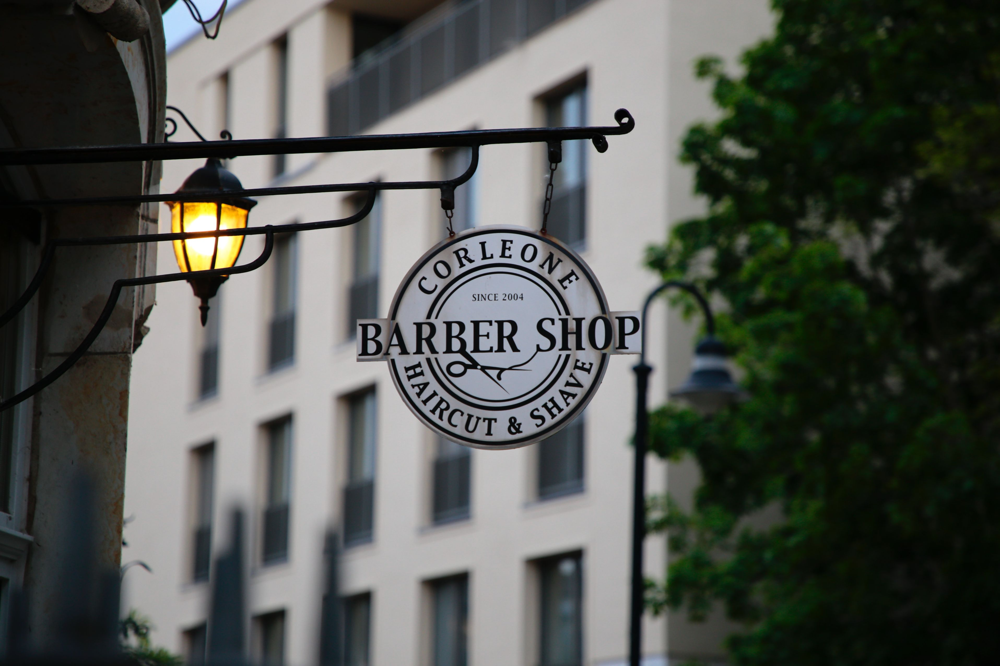

How To Prevent Hair Loss

Here are some tips to help stop hair loss:
1. Maintain a healthy diet: Eating a balanced diet that includes plenty of vitamins
and minerals can help keep your hair healthy and prevent hair loss. Foods that are high
in protein, iron, and vitamin D are especially important for hair health.
2. Avoid tight hairstyles: Pulling your hair back tightly in ponytails, braids, or other
styles can put too much tension on your hair, causing it to break and fall out. Try to
wear your hair in looser styles instead.
3. Limit heat styling: Using hot tools like curling irons and straighteners can damage your
hair and lead to breakage and hair loss. Try to limit your use of these tools, and use a
heat protectant spray when you do use them.
4. Manage stress: Stress can cause hormonal changes that can lead to hair loss. Finding ways
to manage stress, such as through exercise, meditation, or therapy, can help prevent hair loss.
5. Use gentle hair products: Harsh shampoos and conditioners can strip your hair of its
natural oils and cause damage. Look for gentle, sulfate-free products that are designed
for your hair type.
6. Consider supplements: Certain supplements, such as biotin and iron, may help promote
hair growth and prevent hair loss. Talk to your doctor before starting any new supplements.

Step 1: Perform market research to learn how to stand out from the competition. ... Step 2: Decide on your business's legal structure. ... Step 3: Figure out your finances and expenses. ... Step 4: Build your brand. ... Step 5: Choose the right location. ... Step 6: Build your team. ... Step 7: Manage your clientele.
How Much Should A Barber Charge For a Haircut?
A lot of barbers struggle with exactly how much to charge their clients for a haircut. What a lot of barbers will do (especially new shop owners) is call around to 5 or 6 of the local shops around town, get an idea of what they charge and then choose their price on the lower end thinking that they need to be competitive within that market. While this can be a good BEGINNING point, I argue that this is not necessarily the only thing to look at when deciding what to charge. After all, do you really want to be known as the cheapest barber in town (vs. the best)? Nor do you really want to be known as the most expensive either. Both ends of the spectrum tend to alienate clients from entering your shop.
How to Brand Your Barber Shop
Branding is the nuanced art of actively shaping your brand. With creativity, skill and strategy, a brand can establish an identity that sets itself apart from the competition and sparks a connection with its audience. Identifying your audience. Research your competitors. Define your brand's purpose and position. Develop a personality and brand voice. Create your brand story. Pick a brand name. Write a slogan. Design your brand look and logo.